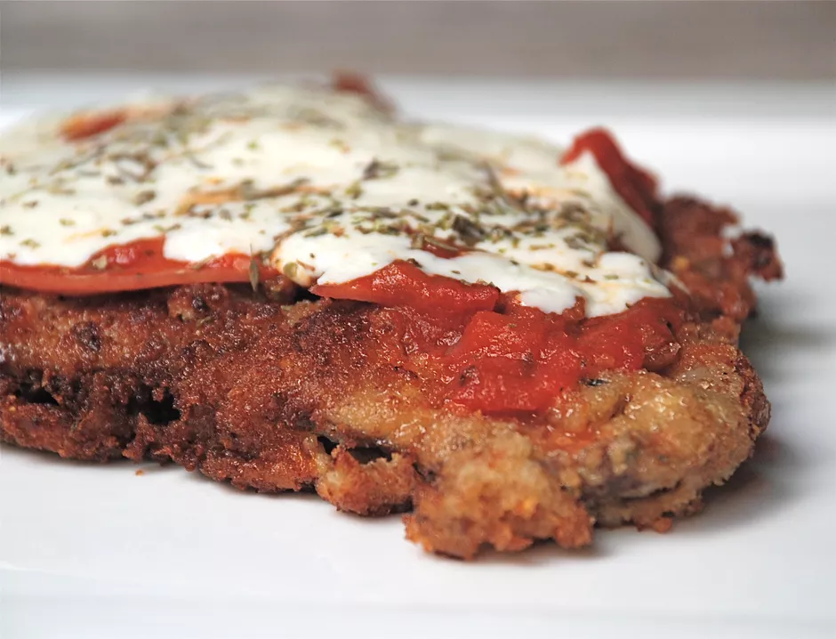

Milanesa Napolitana

Description
Milanesa napolitana is a variation on the breaded fried steak called milanesa that is popular in Argentina and
Uruguay. Milanesa a la Napolitana does not originate from Milan or Naples; it's thought to have been invented in
the 1940s at a Buenos Aires restaurant called “Nápoli”.
Milanesa napolitana is similar to veal parmesan, but with South American touches. After the steak is breaded and
fried, it's topped with a slice of ham, tomato sauce, and melted mozzarella cheese, and served with french
fries. Leftovers make great sandwiches, especially when paired with a soft but crusty roll.
Ingredientes
- 4 thinly sliced skillet steaks(such as top round)
- 3 large eggs
- 1 teaspoon oregano
- Kosher salt, to taste
- Freshly ground black pepper, to taste
- 2 cups fresh bread crumbs
- 1/4 cup grated Parmesan cheese
- 2 cloves garlic, finely minced
- 1/3 cup olive or vegetable oil
- 1/2 cup tomato sauce
- 4 slices deli ham
- 1 cup grated mozzarella cheese
- 1 teaspoon Italian seasoning
- French fries, for serving
Receta
- Gather the ingredients.
- Place eggs in a shallow bowl or pan, and whisk together with oregano and salt and pepper.
- Stir Parmesan cheese and garlic into bread crumbs and place in another shallow pan.
- Dip steaks first in egg mixture, then in bread crumbs, coating well with crumbs.
- Heat oil in a heavy skillet, and cook steaks for several minutes on each side, until golden brown and crispy. Drain steaks on paper towels.
- Place steaks on a baking sheet. Turn on broiler.
- Top each steak with a slice of ham, 2 to 3 tablespoons tomato sauce, and 1/4 cup grated mozzarella cheese. Sprinkle Italian seasoning over cheese, and place steaks under broiler until cheese melts.
- Serve warm, with fries. Enjoy!